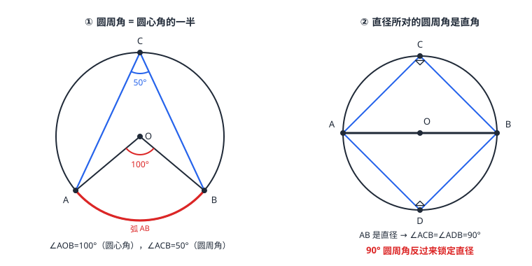

圆心角、弧与圆周角定理
圆心角（顶点在圆心）给弧定「度数」：n^\circ 的圆心角对着 n^\circ 的弧。同圆等圆中，等弦 \Leftrightarrow 等弧 \Leftrightarrow 等圆心角，一条绳上的三兄弟。主角是圆周角定理：一条弧所对的圆周角等于它所对圆心角的一半——站在圆上看，视角恒是圆心视角的一半。三个赠品：同弧圆周角相等、直径对直角、圆内接四边形对角互补。
| 所属主题 | 圆 |
|---|---|
| 所属模块 | 几何 |
| 课标学段 | 第四学段（7~9 年级） |
| 前置知识 | 圆的概念与垂径定理、等腰三角形与等边三角形 |
| 核心素养 | 推理能力几何直观运算能力 |
教材定位
人民教育出版社《人教版（2024版）义务教育教科书·数学》
九年级上册第29章 圆29.2 圆的有关性质
对应九上 29.2 之下的 29.2.2 圆心角与 29.2.3 圆周角：圆周角定理、弧的度数、圆内接四边形。
说明
圆心角：顶点在圆心的角，如 \angle AOB。弧的度数就是它所对圆心角的度数——整圆 360^\circ，半圆 180^\circ。圆心角、弦、弧三位一体：在同圆或等圆中，相等的圆心角所对的弦相等、所对的弧也相等；反过来等弦对等弧、等弧对等角（弦「两头等」就是弦心距相等，垂径定理接管）。
圆周角：顶点在圆上、两边都与圆相交的角。圆周角定理：一条弧所对的圆周角等于它所对圆心角的一半（图 1 左：\angle AOB=100^\circ，则 \angle ACB=50^\circ）。注意「所对」：圆周角的两边夹的弧，是圆心角两臂直接对着的那段劣弧或优弧。
三个常用推论：①同弧（或等弧）所对的圆周角相等——圆上换座位，视角不变；②半圆（直径）所对的圆周角是直角（图 1 右）；③90^\circ 的圆周角所对的弦是直径（②的逆）。再加一枚常客：圆内接四边形（四个顶点都在同一圆上的四边形）对角互补。
使用场景
木工与车工检测：直角尺两条直角边卡在圆形工件边缘，两接触点连线自动是直径——量这条线就是量直径，直角尺成了「找直径仪器」（推论③的现场版）。
圆形竞技场与舞台：环形场地上选手站位看同一段赛道的视角全相等（同弧圆周角相等）——「公平视角」的几何保证。
注意点
圆周角的两个条件缺一不可：顶点在圆上、两边都与圆相交。顶点在圆内或圆外、或只有一边交圆，都不是圆周角，定理不适用。
「同弧」才相等：同圆中不同弧上的圆周角不相等——弧不同，圆心角不同，圆周角跟着不同。等弧（能完全重合的弧）才算数。
别把「一半」记反：圆周角是圆心角的一半。已知圆周角 40^\circ，圆心角是 80^\circ；已知圆心角 100^\circ，圆周角是 50^\circ。图 1 左就是后者的样张。
四点共圆才谈「圆内接四边形」对角互补；普通四边形对角没有任何固定关系。反过来说，对角互补恰是四点共圆的判别标志。
证明

图 1：左——∠ACB（圆周角）与 ∠AOB（圆心角）同对弧 AB，100° 的一半是 50°；右——直径 AB 所对的圆周角 ∠ACB、∠ADB 都是直角（90° 特例在两角处标出）
证明
结论 1圆周角定理的第一类情形：圆心 O 在 \angle ACB 的一条边上时，\angle ACB=\tfrac12\angle AOB。
圆周角定理按圆心位置分三类证明。设圆周角 \angle ACB 所对弧的圆心角为 \angle AOB。第一类：圆心 O 在 \angle ACB 的一条边上（B、O、C 共线）。连 OA：OA=OC，等腰 \triangle OAC 中 \angle OAC=\angle OCA（即圆周角）；\angle AOB 是 \triangle OAC 的外角，等于两不相邻内角之和 =2\angle OCA。所以 \angle ACB=\tfrac12\angle AOB。
关键一步依据是等腰三角形的底角相等与三角形的外角性质：OA=OC 都是半径，所以 \triangle OAC 是等腰三角形，\angle OAC=\angle OCA；\angle AOB 是 \triangle OAC 的外角，等于与它不相邻的两个内角 \angle OAC 与 \angle OCA 之和，于是 \angle AOB=2\angle OCA。又 B、O、C 共线时 \angle OCA 就是 \angle ACB，两边同除以 2 即得。
结论 2圆心在角的内部或外部时，圆周角定理同样成立——三类位置合起来，定理对任何位置成立。
圆心在角内部。连 CO 并延长交圆于 D，把 \angle ACB 拆成 \angle ACD+\angle DCB，每一个都属第一类（D、O、C 共线），相加即 \angle ACB=\tfrac12\angle AOB。第三类：圆心在角外部，同理连 CO 延长，作差（\angle ACB=\angle DCB-\angle DCA）结论相同。三种情况合起来，定理对任何位置成立——这是「分类讨论」在几何证明里的经典演出。
关键一步依据是「同一圆周角拆出的两个小角都满足第一类情形」：内部情形连 CO 延长交圆于 D，D、O、C 共线，于是 \angle ACD 与 \angle DCB 都属于第一类，各是各自圆心角的一半，相加即得；外部情形用两个同类角相减。分类讨论之所以合法，是因为圆心相对 \angle ACB 的位置只有「边上、内部、外部」三种，互不重叠且穷尽全部情形。
结论 3圆周角定理的三条推论：同弧所对的圆周角相等；半圆所对的圆周角是直角；圆内接四边形的对角互补。
同弧上两个圆周角 \angle ACB、\angle ADB 都等于 \tfrac12\angle AOB，故相等；弧换成半圆，圆心角 180^\circ，圆周角 90^\circ（图 1 右）；顶点处的两条半径反向共线时，圆周角 90^\circ 所对弧是半圆，所对弦过圆心即直径。圆内接四边形 ABCD：\angle A 对弧 BCD（不含 A 的那段），\angle C 对弧 BAD，两段弧恰好拼成整圆 360^\circ，各取一半相加：\angle A+\angle C=\tfrac12× 360^\circ=180^\circ——对角互补。
关键一步依据是圆周角定理本身加弧的度数：同一段弧所对的两个圆周角都等于它所对圆心角的一半，而这两个圆周角对的是同一个 \angle AOB，故相等；弧为半圆时圆心角是 180^\circ，一半即 90^\circ。内接四边形中 \angle A 与 \angle C 所对的两段弧合起来是整圆 360^\circ，各取一半再相加得 \tfrac12× 360^\circ=180^\circ，即对角互补。
动手实验
在圆上任意取三四个点（同一侧），用量角器分别量它们对同一段弧的视角——读数全部相同；再量圆心对该弧的张角，恰是两倍。把其中一个点挪到另一侧弧上，量出的是「另一半弧」的视角——互补关系露面了。
解题思路
见圆周角先找同弧的圆心角：\angle AOB=2\angle ACB，一倍半倍换算要写清弧是哪段（点在劣弧还是优弧上，所对弧恰好互补）。
见直径找直角：圆的题目里出现直径，立刻在圆上取点连弦，白得一个 90^\circ，勾股定理马上进场。
证角相等的新通道：不再需要全等——两角对着同弧，直接相等。圆内接四边形求未知角，用对角互补一步到位（例 3）。
按场景的例题
例 1（场景：图形设计） 圆弧装饰图案校核
圆心角 \angle AOB=100^\circ，C 在优弧上，D 在劣弧上。求 \angle ACB 与 \angle ADB，并验证它们互补。
解：C 在优弧上：\angle ACB 对劣弧 AB，=\tfrac12× 100^\circ=50^\circ。D 在劣弧上：\angle ADB 对优弧 AB，优弧 =360^\circ-100^\circ=260^\circ，\angle ADB=\tfrac12× 260^\circ=130^\circ。50^\circ+130^\circ=180^\circ，互补成立（圆内接四边形 ACBD 的对角）。
答：\angle ACB=50^\circ，\angle ADB=130^\circ，两角互补。
例 2（场景：测量与工程） 圆形工件直径检测
木工把直角尺的直角顶点 C 靠在圆形截面的边缘上，两条直角边分别与圆交于 A、B。量得 AC=6 厘米，BC=8 厘米。求截面圆的直径与半径。
解：\angle ACB=90^\circ 是圆周角，所对弦 AB 是直径。在直角 \triangle ABC 中用勾股定理：AB=\sqrt6^2+8^2=\sqrt100=10（厘米），半径 =5 厘米。
答：直径 AB=10 厘米，半径 5 厘米。
例 3（场景：竞技与游戏） 圆形场地站位视角
四人站在圆形场地的圆周上，位置依次为 A、B、C、D，构成圆内接四边形 ABCD。若 \angle A=70^\circ，求对角 \angle C 与 \angle B 所能取到的关系。
解：圆内接四边形对角互补：\angle C=180^\circ-70^\circ=110^\circ。\angle B 与 \angle D 也互补，但仅由 \angle A 无法单独确定 \angle B——四点在圆上「自由滑动」，四边形形状仍可变，只有两对对角之和被锁死。
答：\angle C=110^\circ；\angle B+\angle D=180^\circ，但 \angle B 大小不定。
常用推论
同弧圆周角相等给出「角平分器」效果：圆上任取弧的两个端点，弧上所有点对这条弦的视角都一样——这就是圆弧拱「处处等视角」的原理。
圆内接四边形任一外角等于它的内对角（对角互补的另一种说法）：\angle A 的外角 =\angle C，常在证共圆或求角时一步换出。
直径对直角 \Leftrightarrow 直角对直径，正反两用：既能从直径白得直角（配勾股求弦），也能从直角反认直径（如例 2 的木工尺）。
易错点
错顶点在圆内的角也是圆周角，也等于同弧圆心角的一半。
为什么错圆周角定义要求顶点在圆上。圆内的角大于圆周角（被两条弦「夹宽」了），圆外的角小于圆周角。
正确顶点在圆上、两边都交圆的角才是圆周角；圆内角偏大、圆外角偏小是判断顶点位置的好直觉。
错同圆中所有圆周角都相等。
为什么错相等的前提是「同弧或等弧」。弧不同则圆心角不同，圆周角各归各。
正确同弧（或等弧）所对的圆周角相等；不同弧上的要分别算。
错已知圆周角 40^\circ，则圆心角是 20^\circ。
为什么错把「一半」的方向记反了：圆周角是圆心角的一半，所以圆心角是圆周角的两倍。
正确圆周角 40^\circ \Rightarrow 同弧圆心角 80^\circ。
直观理解
把弧想成一段风景：圆心是舞台正中的机位，圆周上的每个座位是观众席。「圆周角 = 圆心角的一半」说：无论坐哪个座位，看这段风景的视角恰好是中央机位的一半——这不是巧合，而是「同看一段弧」的强制结果。直径是最大的风景（占满半个圆），视角恰好 90^\circ；坐在弧另一侧的观众看的是另一段风景，视角互补。木工的直角尺、摩天轮的视野、环形看台的公平，都在用这条定理。